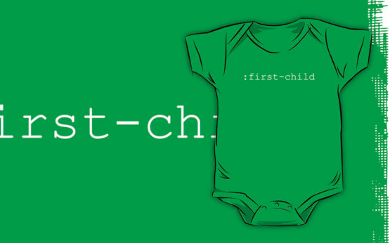

<!DOCTYPE html>
<html lang="en">
  <head>
    <meta name="viewport" content="width=device-width, initial-scale=1">
    <meta charset="utf-8">
    <meta http-equiv="x-ua-compatible" content="ie=edge">
    <meta http-equiv="Content-Type" content="text/html; charset=UTF-8">
    <meta http-equiv="author" content="Daniel Dafoe">
    <meta property="og:site_name" content="Development, Content Writing, and Creativity by Daniel Dafoe">
    <meta property="og:url" content="http://danieldafoe.com">
    <meta property="og:image" content="http://danieldafoe.com/res/og-bg.png">
    <meta property="og:description" content="Daniel Dafoe is a Mobile and Web Developer based in Burlington, Ontario who is constantly expanding his skills in the areas of Front End Web and Mobile Development.">
    <meta name="twitter:card" content="summary_large_image">
    <meta name="twitter:description" content="Web, Mobile, and Creativity by Daniel Dafoe">
    <meta name="twitter:title" content="A Portfolio of Daniel Dafoe">
    <meta name="twitter:site" content="@danieldafoe">
    <meta name="twitter:domain" content="danieldafoe.com">
    <meta name="twitter:image" content="http://danieldafoe.com/res/og-bg.png">
    <meta name="twitter:creator" content="@danieldafoe">
    <meta name="theme-color" content="#1663c7">
    <link href="favicon.ico" rel="favicon">
    <link href="css/vendor/bootstrap.min.css" rel="stylesheet">
    <link href="css/vendor/font-awesome-4.3.0/css/font-awesome.min.css" rel="stylesheet">
    <link href="css/index.css" rel="stylesheet">
    <link href="https://fonts.googleapis.com/css?family=Libre+Baskerville|Comfortaa" rel="stylesheet" type="text/css">
    <title>CSS Selector Clothing Design | Freelance Web Developer in Burlington</title>
    <meta name="description" content="Daniel Dafoe is a PhoneGap Mobile App Developer and Front End Web Developer in Burlington.">
    <meta property="og:title" content="CSS Selector Clothing Design">
  </head>
</html>
<body>
  <nav role="navigation" class="out">
    <div class="nav-inner"><a href="http://danieldafoe.com/blog">Blog</a><a href="#skills">Skills</a><a href="#projects">Projects</a><a href="#contact">Contact</a></div>
  </nav>
  <div id="top" class="wrapper container-fluid">
    <div class="screen"></div>
    <div class="nav-reveal">
      <button tabindex="-1" role="button" aria-expanded="false"><i class="fa fa-bars"></i> MENU</button>
    </div>
    <div class="main-container row">
      <div class="logo exp-info-logo">
        <h1>CSS Selector<br>Clothing Design</h1>
        <h2>By Daniel Dafoe</h2>
      </div>
    </div>
    <div class="exp-info">
      <div class="container">
        <div class="row">
          <div class="col-sm-12">
            <div class="exp-info-img urban"><a href="" title="Click to view or purchase this design on Redbubble." alt=":first-child CSS selector text overlayed on kids clothes"></a></div>
          </div>
        </div>
        <div class="row">
          <div class="col-sm-push-2 col-sm-8">
            <div class="exp-info-text">
              <h1>CSS Selector Clothing Design</h1>
              <p>
                Intended to be for nerdy web developers who have at least one child, the <code>:first-child</code> apparel design was created for people who want a tongue-in-cheek way of showing that a child of theirs is the first-born.
                
              </p>
              <p>
                Although this was intended to showcase a first-born child of a parent, technically you could also buy one for yourself if you were the first child in your own family tree.
                
              </p>
              <h3>Rationale</h3>
              <p>
                While working as a Web Developer at iQuest Media and discussing my endeavours in the field of nifty apparel design with simplistic, graphic-less ideas, I came up with the idea to really brand my clothing designs to people like myself: web developers.
                
              </p>
              <p>
                By designating a specific market for my designs, I could now target that group and assume some knowledge that they would have. This way I don't need to worry as much about making sure everyone can understand, just so long as it has something to do with web development.
                
              </p>
            </div>
          </div>
        </div>
      </div>
    </div>
    <div class="exp-info-footer"><a href="http://danieldafoe.com/#projects" class="dd-btn">Back</a></div>
  </div>
</body>
<!-- Google Analytics-->
<!-- Sorry for stalking your every move...I just want to understand you.-->
<script>
  (function(i,s,o,g,r,a,m){i['GoogleAnalyticsObject']=r;i[r]=i[r]||function(){
  (i[r].q=i[r].q||[]).push(arguments)},i[r].l=1*new Date();a=s.createElement(o),
  m=s.getElementsByTagName(o)[0];a.async=1;a.src=g;m.parentNode.insertBefore(a,m)
  })(window,document,'script','//www.google-analytics.com/analytics.js','ga');
  
  ga('create', 'UA-53844906-1', 'auto');
  ga('require', 'displayfeatures');
  ga('send', 'pageview');
</script>
<!-- End Google Analytics-->
<script src="js/vendor/jquery-2.1.1.min.js"></script>
<script src="js/vendor/angular.min.js"></script>
<script src="js/skills-app.js"></script>
<script src="js/index.js"></script>